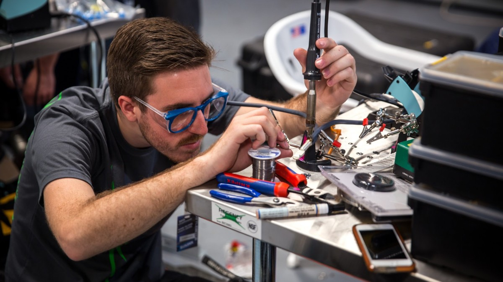
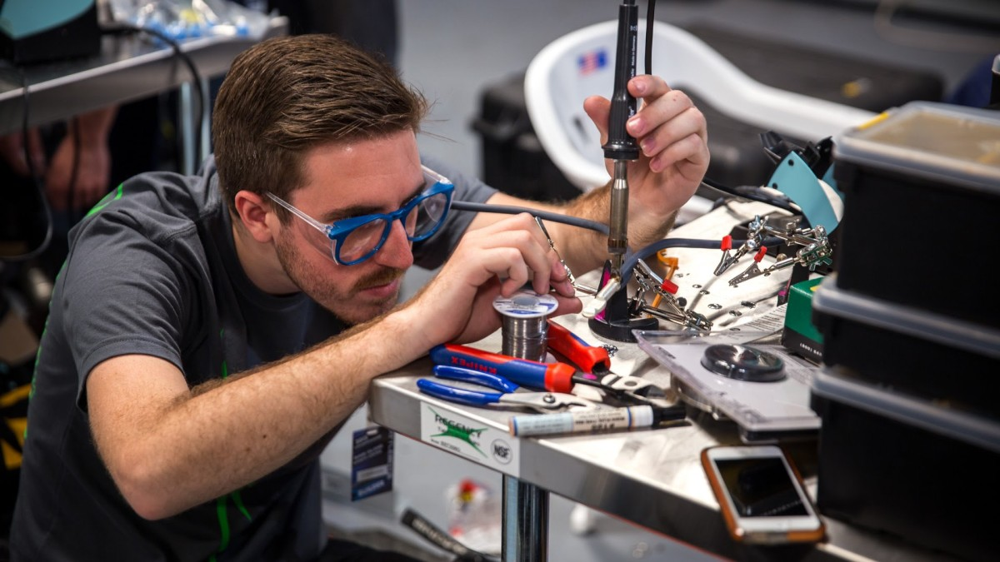
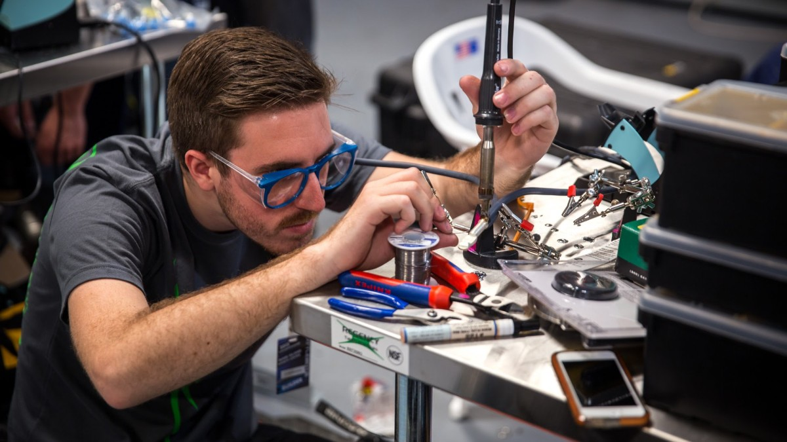

Designing a robot using CAD allows you to imagine and test different robot designs on a computer before building the real thing.
Coding robots involves programming instructions that enable intelligent automation and decision-making.
Building robots with parts is like assembling a cool robot puzzle with special parts that have their own role.
Without a driver, who is going to make the robot move?
Creating a robot is a multi-step process. It begins with designing the robot's look and how it will work, followed by writing the code that tells it what to do. After that, you actually build the robot with all its physical parts. Lastly, you control the robot by running the code, whether it's through remote control or letting it make decisions on its own, while constantly refining and testing the design to make sure it works as planned.
